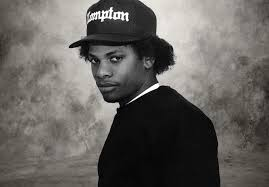

Eric Lynn Wright, mer känd under sitt artistnamn Eazy-E, född 7 september 1964 i Compton, Kalifornien,[4][5][6] död 26 mars 1995 i Los Angeles, Kalifornien,[7][8] var en amerikansk rappare, musikproducent och entreprenör. Han kallas inom hiphopvärlden för "The Godfather of Gangsta Rap".
Wright började sin karriär genom att grunda skivbolaget Ruthless Records 1986. Efter en kort solokarriär, där han arbetade mycket med Ice Cube och Dr. Dre, bildade trion gruppen N.W.A senare samma år. Gruppen släppte debutalbumet Straight Outta Compton 1988, som tog upp flera sociala och politiska problem. Albumet är ofta sett som en av de bästa och mest inflytelserika albumen genom tiderna inom genren. Gruppen släppte sitt sista studioalbum tre år senare, och bröt upp efter långvariga finansiella problem.
Efter gruppen fortsatte Wright sin solokarriär, då han släppte två EP-skivor, vilka tog inspiration från funkmusik, samtida hiphop och komedi.[10] Han hade även en uppmärksammad beef med Dr. Dre, innan han blivit diagnostiserad med Aids 1995. Han dog en månad efter att han blivit diagnostiserad.
Eazy-E